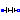

Interfaces
Extends from Modelica.Icons.InterfacesPackage (Icon for packages containing interfaces).
| Name | Description |
|---|---|
|  BatteryInterface | Partial model for battery |
| Interface for the averaged switch network models | |
| Common interface for power converters with two ports |
Partial model for battery

Partial model for battery
Extends from Modelica.Electrical.Analog.Interfaces.OnePort (Component with two electrical pins p and n and current i from p to n).
| Type | Name | Description |
|---|---|---|
| PositivePin | p | Positive pin (potential p.v > n.v for positive voltage drop v) |
| NegativePin | n | Negative pin |
PVSystems_Electrical_Interfaces.html
 PVSystems.Electrical.Interfaces.SwitchNetworkInterface
PVSystems.Electrical.Interfaces.SwitchNetworkInterface
Interface for the averaged switch network models

Extends from TwoPort (Common interface for power converters with two ports).
| Type | Name | Default | Description |
|---|---|---|---|
| Real | dmin | 1e-3 | Minimum duty cycle [1] |
| Real | dmax | 1 | Maximum duty cycle [1] |
| Type | Name | Description |
|---|---|---|
| PositivePin | p1 | Positive pin of the left port (potential p1.v > n1.v for positive voltage drop v1) |
| NegativePin | n1 | Negative pin of the left port |
| PositivePin | p2 | Positive pin of the right port (potential p2.v > n2.v for positive voltage drop v2) |
| NegativePin | n2 | Negative pin of the right port |
| input RealInput | d | Duty cycle |
PVSystems_Electrical_Interfaces.html
 PVSystems.Electrical.Interfaces.TwoPort
PVSystems.Electrical.Interfaces.TwoPort
Common interface for power converters with two ports

| Type | Name | Description |
|---|---|---|
| PositivePin | p1 | Positive pin of the left port (potential p1.v > n1.v for positive voltage drop v1) |
| NegativePin | n1 | Negative pin of the left port |
| PositivePin | p2 | Positive pin of the right port (potential p2.v > n2.v for positive voltage drop v2) |
| NegativePin | n2 | Negative pin of the right port |
PVSystems_Electrical_Interfaces.html